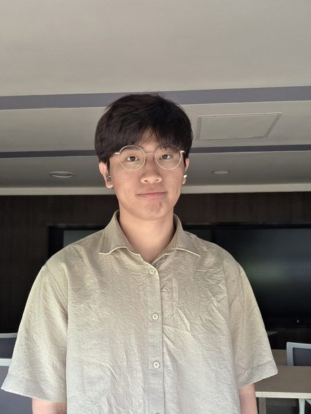

Master of Public Policy Candidate
KDI School of Public Policy and Management
I study industrial organization, competition policy, and applied econometrics, with recent work on large language models in economics and finance.
Hyuk An is a Master of Public Policy candidate at the KDI School of Public Policy and Management. He holds a B.A. in Economics (magna cum laude) from Korea University and spent a semester on exchange at the National University of Singapore. He currently works as a research assistant at the KDI School, and his interests center on competition policy, industrial organization, and applied econometric methods.
Email: hyukan@kdis.ac.kr
KDI School of Public Policy and Management, Sejong, South Korea